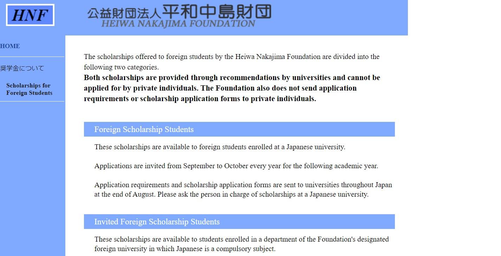
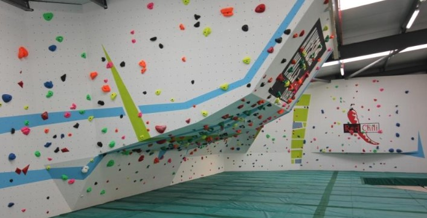

My largest interest outside business analytics is my learning of the Japanese Language. Below, I have outlined my biggest achievements in this space. I have included links for more information, available by clicking on the image.

Academic Scholarship for study abroad.
In my third year of studies in DCU I received the opportunity to study abroad as a part of my course work in Japan. Along with my classmates, I was given the opportunity to apply for a scholarship. This scholarship is funded by a foundation in Japan, and given to only one student from DCU who will study in Japan. The awardance of this scholarship was based on academics performance along with contributions to the promotion of Japan in Ireland. I was awarded this scholarship for the year and also attended a conference for this foundation.
Japanese Language Proficiency Test (JLPT) N3 Achieved.
I am very interested in languages and am fluent in the Japanese Language. I have achieved the Japanese Language Proficiency Test (JLPT) N3 level, which is the level at which you can work in Japan. I have completed a year abroad in Japan, as mentioned, which gave me great experience in the language. It also gave me a lot of confidence in speaking with others in a casual and professional environment. I also have a predicted 1.1 in my Japanese language modules for my final year grades. I hope to work and live in Japan working in business analytics. Ideally this would be in a foreign office of an Irish company.
Personal Interests
I try to make the most of my free time, I like to do some physical activity, be creative and volunteer when I can. This involves my attendence at the gym, sewing and attempting to make my own clothing, along with volunteer work with Scouting Ireland.

Hobbies
I have a few hobbies outside of my academics, this includes physical activities and creative endeavours. I find being healthy very important and love doing physical activities, I go to the gym frequently during the week and have recently begun bouldering when I get the chance. I believe getting an hour of exercise is crucial to keeping a clear head and reducing my anxieties. I am also interested in sewing my clothing. I have the goal of only purchasing from second-hand establishments and creating new clothing from this. I am passionate about not purchasing from fast-fashion retailers.
Volunteer work
I have been a member of Scouting Ireland since I was young. As a result, I have attended water-stations frequently at marathons and half-marathons. As I became more experienced, I volunteered as a mentor to younger Scout members. In Secondary School I was a Peer Mentor to 1st year students when I was in 4th year, which involved me and another mentor taking over a classroom of students to teach them about not being tolerant of bullying.